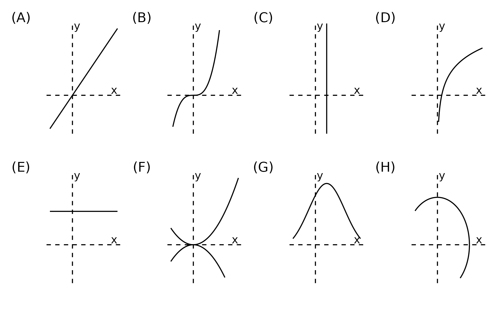
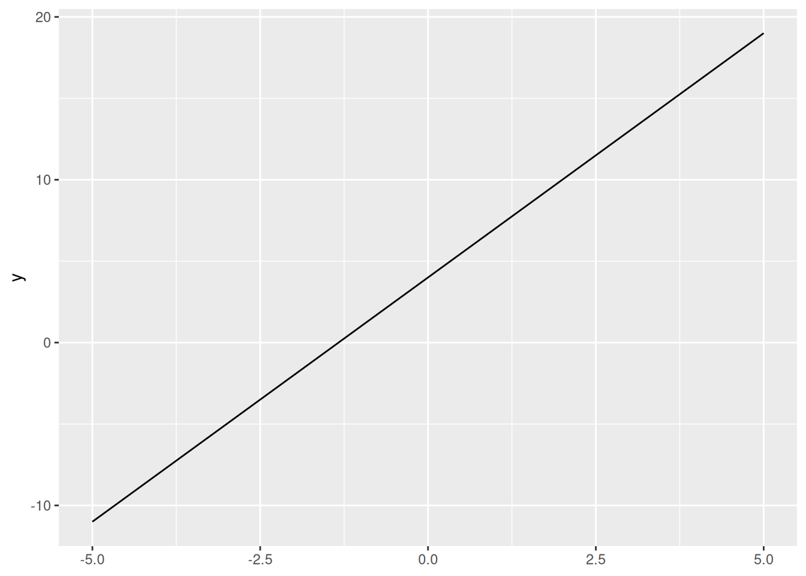
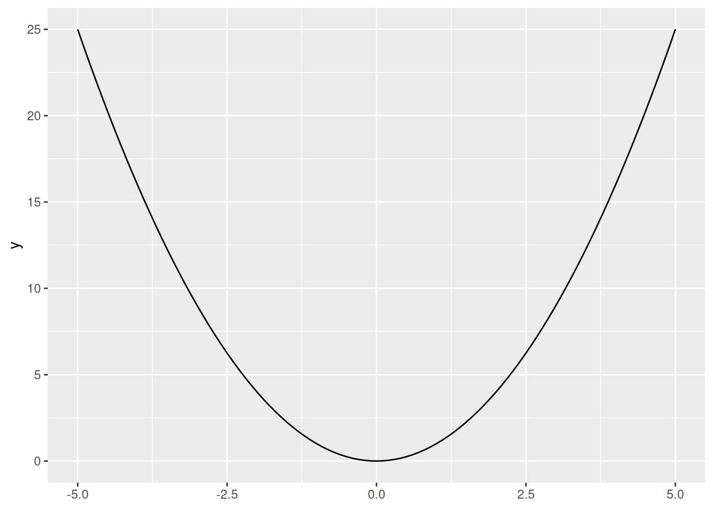
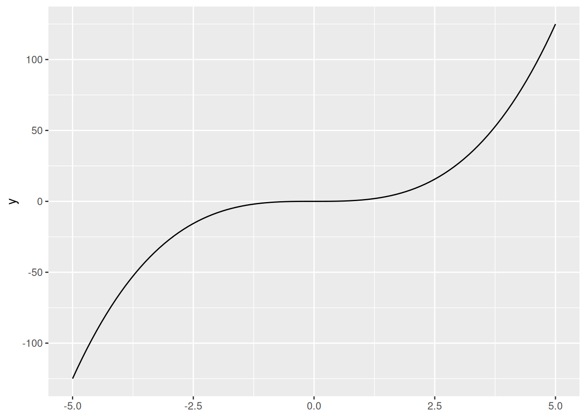
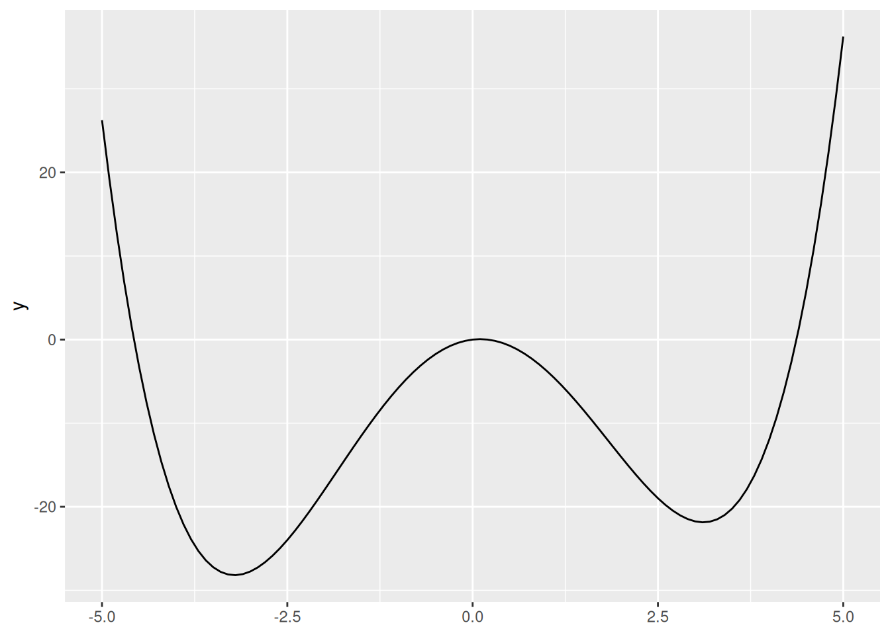
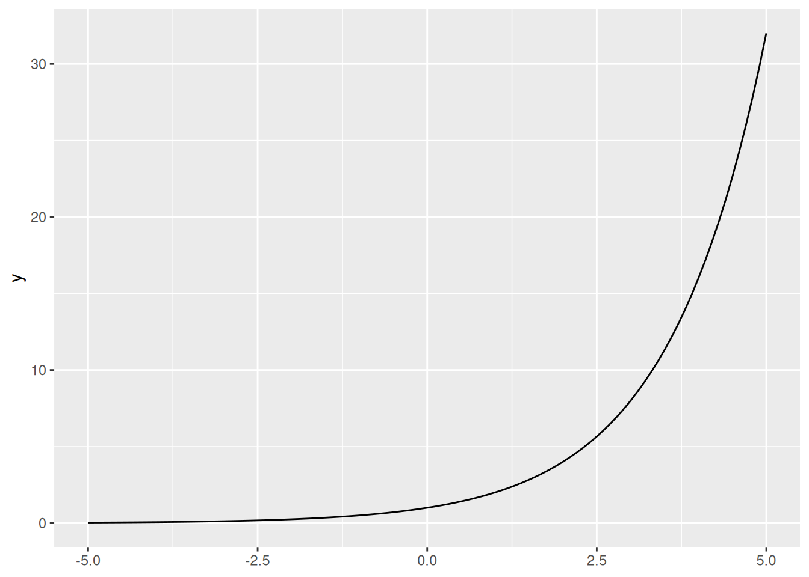
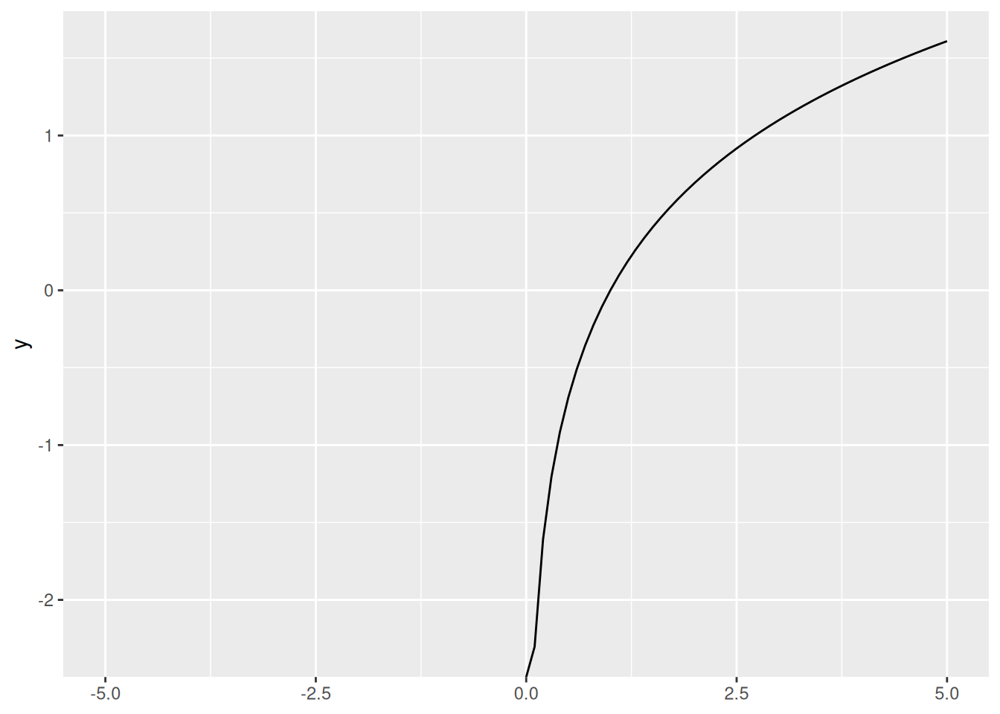
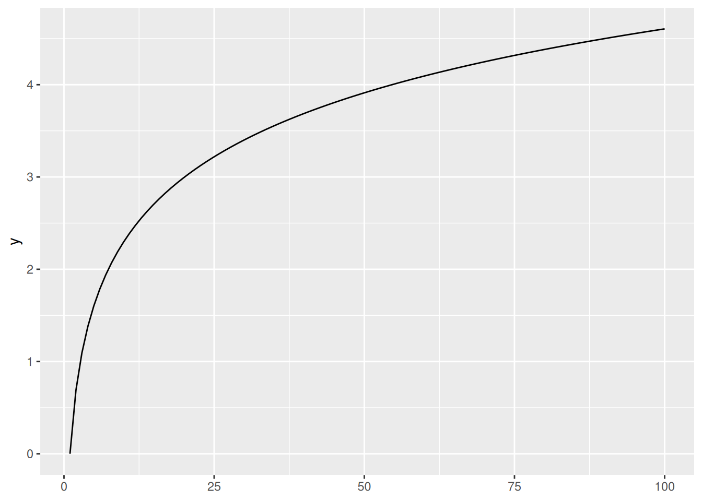

{kind=link}
mult_by_two <- function(x){x * 2}3 Functions
3.1 Basics
3.1.1 What is a function?
Informally, a function is anything that takes input(s) and gives one defined output. There are always three main parts:
The input (\(x\) values, or each value in the domain)
The relationship of interest
The output (\(y\) values, or a unique value in the range)
Note
“\(f(x) = \space ...\) is the classic notation for writing a function, but we can also use”\(y = \space ...\)“. This is because \(y\) is”a function of” \(x\), so \(y=f(x)\).
Let’s take a look at an example and break down the structure:
\[f(x) = 3x + 4\]
\(x\) is the input (some value) that the function takes.
For any \(x\), we multiply by three and add 4, which is the relationship.
Finally, \(f(x)\) or \(y\) is the unique result, or the output.
The most common name to give a function is, predictably, “\(f\)”, but we can have other names such as “\(g\)” or “\(h\)”. The choice is yours.
Important
When reading out loud, we say “[name of function] of x equals [relationship]. For example, \(f(x) = x^2\) is referred to as”f of x equals x squared.”
3.1.2 Vertical line test
Exercise
When graphed, vertical lines cannot touch functions at more than one point. Why?
Which of the following represent functions?

3.2 Functions in R
Often we need to create our own functions in R. To build them: we use the keyword function alongside the following syntax: function_name <- function(argumentnames){ operation }
function_name: the name of the function, that will be stored as an object in the R environment. Make the name concise and memorable!function(argumentnames): the inputs of the function.{ operation }: a set of commands that are run in a predefined order every time we call the function.
For example, we can create a function that multiplies a number by 2:
mult_by_two(x = 5) # we can also omit the argument name (x =)[1] 10If the function body works for vectors, our custom function will do too:
mult_by_two(1:10) [1] 2 4 6 8 10 12 14 16 18 20We can also automate more complicated tasks such as calculating the area of a circle from its radius:
circ_area_r <- function(r){
pi * r ^ 2
}
circ_area_r(r = 3)[1] 28.27433
Exercise
Create a function that calculates the area of a circle from its diameter. So your_function(d = 6) should yield the same result as the example above. Your code:
Functions can take more than one argument/input. In a silly example, let’s generalize our first function:
mult_by <- function(x, mult){x * mult}mult_by(x = 1:5, mult = 10)[1] 10 20 30 40 50mult_by(1:5, mult = 10)[1] 10 20 30 40 50mult_by(1:5, 10)[1] 10 20 30 40 50To graph a function, we’ll use our friend ggplot2 and stat_function():
library(tidyverse)── Attaching core tidyverse packages ──────────────────────── tidyverse 2.0.0 ──
✔ dplyr 1.1.4 ✔ readr 2.1.5
✔ forcats 1.0.0 ✔ stringr 1.5.1
✔ ggplot2 3.5.1 ✔ tibble 3.2.1
✔ lubridate 1.9.3 ✔ tidyr 1.3.1
✔ purrr 1.0.2
── Conflicts ────────────────────────────────────────── tidyverse_conflicts() ──
✖ dplyr::filter() masks stats::filter()
✖ dplyr::lag() masks stats::lag()
ℹ Use the conflicted package (<http://conflicted.r-lib.org/>) to force all conflicts to become errorsggplot() +
stat_function(fun = mult_by_two,
xlim = c(-5, 5)) # domain over which we will plot the function
User-defined functions have endless possibilities! We encourage you to get creative and try to automate new tasks when possible, especially if they are repetitive.
Tip
Functions in R can also take non-numeric inputs. For example:
say_my_name <- function(my_name){paste("My name is", my_name)}say_my_name("Inigo Montoya")[1] "My name is Inigo Montoya"3.3 Common types of functions
3.3.1 Linear functions
\[y=mx+b\]
Linear functions are those whose graph is a straight line (in two dimensions).
\(m\) is the slope, or the rate of change (common interpretation: for every one unit increase in \(x\), \(y\) increases \(m\) units).
\(b\) is the y intercept, or the constant term (the value of \(y\) when \(x=0\)).
Below is a graph of the function \(y = 3x + 4\):
ggplot() +
stat_function(fun = function(x){3 * x + 4}, # we don't need to create an object
xlim = c(-5, 5)) 
3.3.2 Quadratic functions
\[y=ax^2 + bx + c\]
Quadratic functions take “U” forms. If \(a\) is positive, it is a regular “U” shape. If \(a\) is negative, it is an “inverted U” shape.
Note that \(x^2\) always returns positive values (or zero).
Below is a graph of the function \(y = x^2\):
ggplot() +
stat_function(fun = function(x){x ^ 2},
xlim = c(-5, 5)) 
Exercise
Social scientists commonly use linear or quadratic functions as theoretical simplifications of social phenomena. Can you give any examples?
Exercise
Graph the function \(y = x^2 + 2x - 10\), i.e., a quadratic function with \(a=1\), \(b=2\), and \(c=-10\).
Next, try switching up these values and the xlim = argument. How do they each alter the function (and plot)?
3.3.3 Cubic functions
\[y=ax^3 + bx^2 + cx +d\]
These lines (generally) have two curves (inflection points).
Below is a graph of the function \(y = x^3\):
ggplot() +
stat_function(fun = function(x){x ^ 3},
xlim = c(-5, 5)) 
Exercise
We’ll briefly introduce Desmos, an online graphing calculator. Use Desmos to graph the following function \(y = 1x^3 + 1x^2 + 1x + 1\). What happens when you change the \(a\), \(b\), \(c\), and \(d\) parameters?
3.3.4 Polynomial functions
\[y=ax^n + bx^{n-1} + ... + c\]
These functions have (a maximum of) \(n-1\) changes in direction (turning points). They also have (a maximum of) \(n\) x-intercepts.
High-order polynomials can be made arbitrarily precise!
Below is a graph of the function \(y = \frac{1}{4}x^4 - 5 x^2 + x\).
ggplot() +
stat_function(fun = function(x){1/4 * x ^ 4 - 5 * x ^ 2 + x},
xlim = c(-5, 5)) 
3.3.5 Exponential functions
\[y = ab^{x}\]
Here our input (\(x\)), is the exponent.
Below is a graph of the function \(y = 2^x\):
ggplot() +
stat_function(fun = function(x){2 ^ x},
xlim = c(-5, 5)) 
Exercise
Exponential growth appears quite frequently social science theories. Which variables can be theorized to have exponential growth over time?
3.4 Logarithms and exponents
3.4.1 Logarithms
Logarithms are the opposite/inverse of exponents. They ask how many times you must raise the base to get \(x\).
So \(log_a(b)=x\) is asking “a raised to what power x gives b?” For example, \(\log_3(81) = 4\) because \(3^4=81\).
Warning
Logarithms are undefined if the base is \(\le 0\) (at least in the real numbers).
3.4.2 Relationships
If, \[ log_ax=b\] then, \[a^{log_{a}x}=a^b\] and \[x=a^b\]
3.4.3 Basic rules
Change of Base rule: \(\dfrac{\log_x n}{\log_x m} = \log_m n\)
Product Rule: \(\log_x(ab) = \log_xa + \log_xb\)
Quotient Rule: \(\log_x\left(\frac{a}{b}\right) = \log_xa - \log_xb\)
Power Rule: \(\log_xa^b = b \log_x a\)
Logarithm of 1: \(\log_x 1 = 0\)
Logarithm of the Base: \(log_{x}x=1\)
Exponential Identity: \(m^{\log_m(a)} = a\)
3.4.4 Natural logarithms
We most often use natural logarithms for our purposes.
This means \(log_e(x)\), which is usually written as \(ln(x)\).
Important
\(e \approx 2.7183\).
- \(ln(x)\) and its exponent opposite, \(e^x\), have nice properties when we perform calculus.
3.4.5 Illustration of \(e\)
Imagine you invest $1 in a bank and receive 100% interest for one year, and the bank pays you back once a year: \[(1+1)^1= 2\].
When it pays you twice a year with compound interest:
\[(1+1/2)^2=2.25\]
If it pays you three times a year:
\[(1+1/3)^3=2.37...\]
What will happen when the bank pays you once a month? Once a day?
\[(1+\frac{1}{n})^{n}\]
However, there is limit to what you can get.
\[\lim_{n\to\infty} (1 + \dfrac{1}{n})^n = 2.7183... = e\]
For any interest rate \(k\) and number of times the bank pays you \(t\): \[\lim_{n\to\infty} (1 + \dfrac{k}{n})^{nt} = e^{kt}\]
\(e\) is important for defining exponential growth. Since \(ln(e^x) = x\), the natural logarithm helps us turn exponential functions into linear ones.
Exercise
Solve the problems below, simplifying as much as you can. \[log_{10}(1000)\] \[log_2(\dfrac{8}{32})\] \[10^{log_{10}(300)}\] \[ln(1)\] \[ln(e^2)\] \[ln(5e)\]
3.4.6 Logarithms in R
By default, R’s log() function computes natural logarithms:
log(100)[1] 4.60517We can change this behavior with the base = argument:
log(100, base = 10)[1] 2We can also plot logarithms. Remember that \(ln(x)\) \(\forall x<0\) is undefined (at least in the real numbers), and ggplot2 displays a nice warning letting us know!
ggplot() +
stat_function(fun = function(x){log(x)},
xlim = c(-5, 5)) Warning in log(x): NaNs producedWarning: Removed 50 rows containing missing values or values outside the scale range
(`geom_function()`).
ggplot() +
stat_function(fun = function(x){log(x)},
xlim = c(1, 100)) 
3.5 Composite functions (functions of functions)
Functions can take other functions as inputs, e.g., \(f(g(x))\). This means that the outside function takes the output of the inside function as its input.
Say we have the exterior function \[f(x)=x^2\] and the interior function \[g(x)=x-3\].
Then if we want \(f(g(x))\), we would subtract 3 from any input, and then square the result or \[f(g(x)) = (x-3)^2\].
Warning
We write this as \((x-3)^2\), not \(x^2-3\)!
R can handle this just fine:
f <- function(x){x ^ 2}
g <- function(x){x - 3}f(g(5))[1] 4Here we can also use pipes to make this code more readable (imagine if we were chaining multiple functions…). Remember that pipes can be inserted with the Cmd/Ctrl + Shift + M shortcut.
# compute g(5), THEN f() of that
g(5) |> f()[1] 4
Exercise
Compute g(f(5)) using the definitions above. First do it manually, and then check your answer with R.